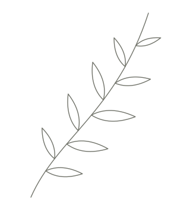
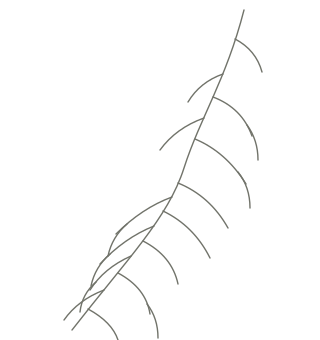
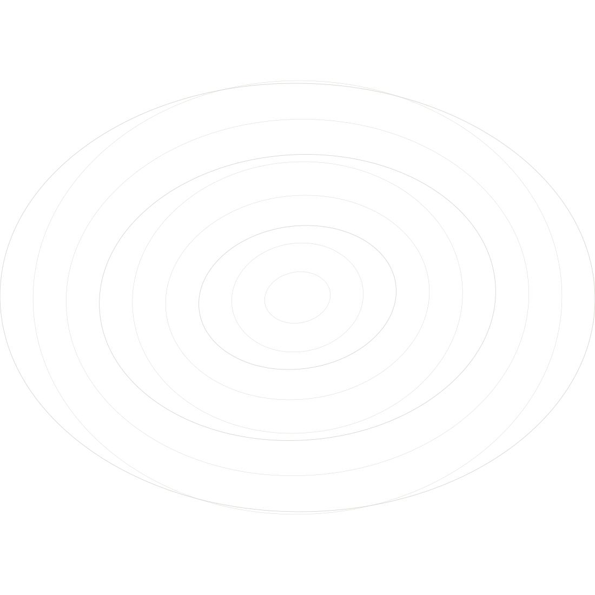

Facing an important decision
Several paths are open to you, and none of them feels entirely clear.
Coaching for the times when you know something is shifting, but not yet quite where it is taking you.
Room for a clearer view of yourself, your decisions, your patterns and your next steps.
In Maribor or online.

About the name
Pressence brings together presence and essence.
Between them there is a space. A space that opens when we stop for a moment, quieten the noise outside and set down the need for immediate answers.
It is in that space that we can begin to perceive more clearly what is truly ours, what matters to us and what guides us. Presence becomes, in this way, a path that brings us gradually closer to the essence.

In the pace of ordinary days we tend to look for answers outside ourselves.
In advice. In expectations. In what we ought to be doing. In what we have always done.
Coaching makes a different kind of space.
A space where you can stop, look a little deeper, and begin to recognise what, right now, is genuinely yours.
Perhaps this is where you are
Perhaps it has no name yet. Perhaps you have known it a long time.
Several paths are open to you, and none of them feels entirely clear.
What once worked no longer holds you up. And the new has not taken shape yet.
The situation is different, the feeling familiar. Something keeps repeating.
Seen from outside, much is in place. Inside, something is asking for attention.
You are asking what you want to keep, what to let go of, and who you want to be in the next chapter.
You lead people, make demanding decisions or carry a great deal, and you miss having somewhere to think without pressure.
What coaching is
I believe people often hold more answers than they realise.
Sometimes those answers are drowned out by fear, by old habits, by the expectations around us, or by ways of operating that once helped and may now be holding us back.
Coaching is a space where you can begin to notice this.
Through conversation, questions, listening and reflection, the two of us gradually build more clarity about what is happening, what supports you, what holds you back and where you want to go next.
What coaching can give you
Once things are said aloud and looked at from several angles, they often take a different shape.
You come to recognise your values, needs, beliefs, reactions and recurring patterns more clearly.
Not out of reflex or other people's expectations, but with more understanding of what matters to you.
A question can open up possibilities that our settled way of thinking makes hard to see.
An insight matters most when it can be carried into a life, a relationship or a decision.
Not so that you become someone else, but so that you can act more in keeping with who you already are.
How I work
What matters to me is not to see you only through the goal, or the difficulty, you arrive with.
I am interested in the whole person.
Your experience. Your values. Beliefs. Feelings. Relationships. Patterns. The way you make decisions, and the way you have learned to move through the world.
In my work I:
Because depth does not have to mean pressure.
About me
My path into coaching was not only a decision about a new career.
It was also a personal move away from a way of living in which I long believed I had to be strong, have the answers, and above all keep going.
The work on myself showed me something different.
That change often does not mean becoming someone else. Sometimes it means slowly setting down what no longer serves us, so that we can come closer to ourselves.
That experience still shapes the way I work with people.
How it works
We begin with an introductory conversation. No commitment. We look at what you need, and whether the way I work suits you.
What do you want to explore? What would be different if something moved?
We explore the thinking, the patterns, the values, the needs, the obstacles and the perspectives bound up with your situation.
What does this new awareness mean for your decisions, your relationships, your next steps?
Coaching is not a straight line. We keep checking what you need and where the process is going.

Trust
Confidentiality, clear agreements, professional boundaries and respect for your autonomy are, for me, the ground the coaching relationship stands on.
My work is not to take responsibility for your decisions, or to tell you how to live.
My work is to make a space safe enough and clear enough that you can begin to recognise your own answers.
Coaching is also not a substitute for psychotherapy, medical care or other professional support. If I judge that coaching is not the right kind of support for your situation, I will say so to you openly.
Notes
I write about coaching, change, self-awareness, inner patterns, decisions, and the relationship we build with ourselves.
Not as a list of rules. More as an invitation to think.
The first conversation is there so that we can meet, and work out whether the way I work can be of use to you.
With no obligation to continue.